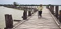
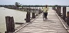


 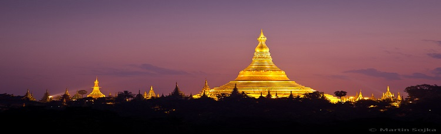
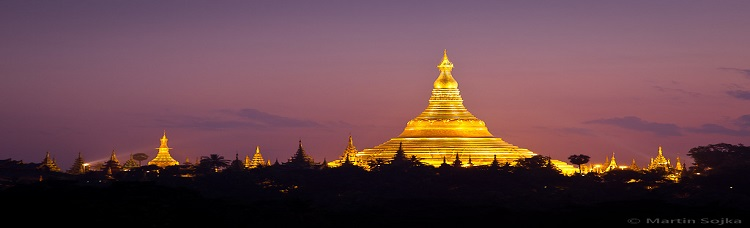
 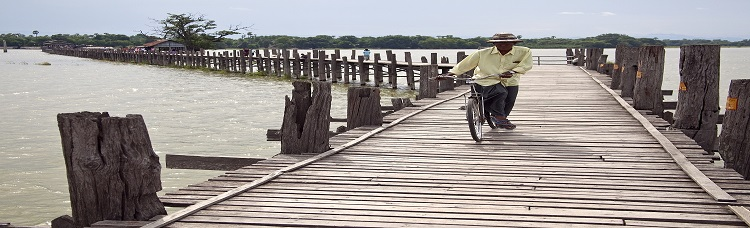
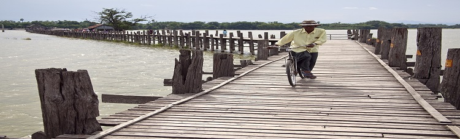

Available foods in Myanmar!
There are many popular food in Myanmar. Below are more interesting dishes for you to take. If you are cooking. you should also know about the spices and seasonings too.
>>> Htamane
The Htamane (glutinous rice) cooking festival is a traditional event in Myanmar that occurs around the Full Moon Day of the lunar month of Tabodwe. which usually falls in late January or early February. During the festival. glutinous rice is crushed and kneaded before it is mixed with other ingredients in huge iron vats using big paddles. The first portion of this delicacy is offered to Lord Buddha and Buddhist monks. while participants in the ceremony and onlookers share what is left over. In some areas of the country. a dobat (traditional drum music) troupe performs to encourage the htamane makers.
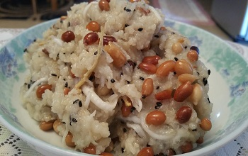 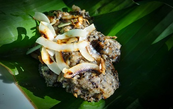The tools required to make glutinous rice include a huge. wide-rimmed iron bowl. two long-handled stirring paddles. three bricks for the makeshift fireplace and firewood.
Ingredients
- pyis (5 litres) glutinous rice
- l viss (1.63 kilograms) peanut oil
- I/2 grated coconut
- 0.6 viss (I kg) peanuts (without husks)
- Sliced ginger
- Salt
>>> Laphet salad
Taking tea usually without milk and sugar is the custom in the Shan State. as it is through out the Union of Myanmar because everyone. young or elderly. male or female. lay or monk. drinks tea usually in the traditional way but rarely in a modern way mixing it with milk and sugar. Tea is served at every social or religious ceremony or function. In every household there is at least one member of the family who likes to have a cup of plain tea as soon as she or he gets up from bed. The first duty of the house wife when she gets up is to boil water and prepare a pot of tea. not only for the grandfather. grandmother. father or husband. but for herself and her children. Guests. near and far whoever comes for a visit is offered a cup of plain tea. It has become customary for everyone in the Shan State to give tea as gifts to visitors either in dried leaves or in pickled state.
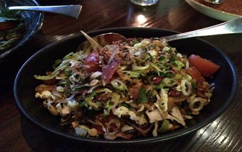 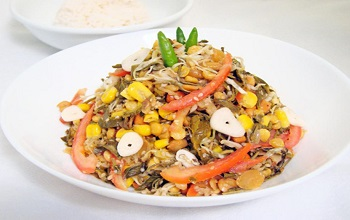Tea shops are crowded with people young and old alike. Holding a cup of plain tea and slowly sipping it. is quite refreshing. People would do their business well at the tea shops by the road side. Tea serves many purposes -social. economic and religious. Nobody can run away from tea. Tea has become a national drink and tea drinkers always say . I don ' t drink water the whole day. But I take plain tea instead. it is safer and is good for my heath."
Go to top^^^< < < Back Next>>>
Well-Known Places
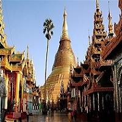Shwe Dagon Pogoda

Kyaiktiyo (Golden Rock)

Mahar Myat Muni Pagoda
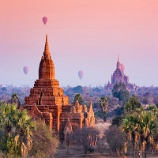
Bagan (Ancient City)
 facebook
facebook Twitter
Twitter youtube
youtube LinkedIn
LinkedIn